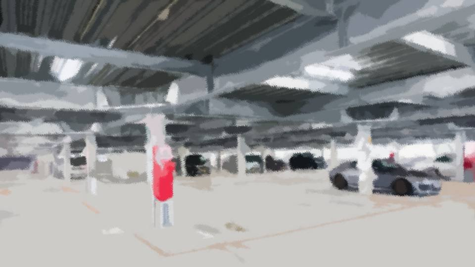
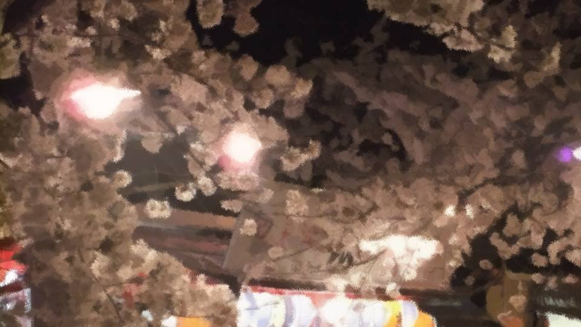
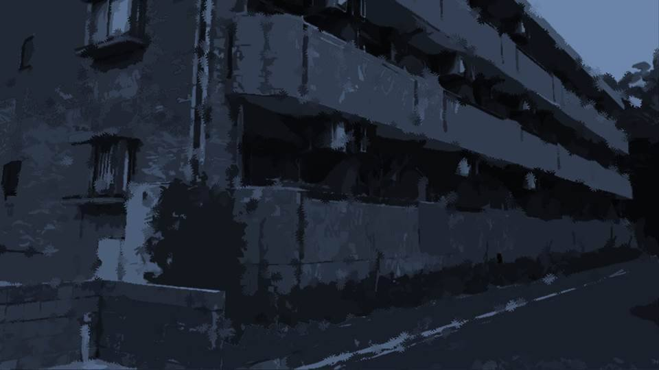
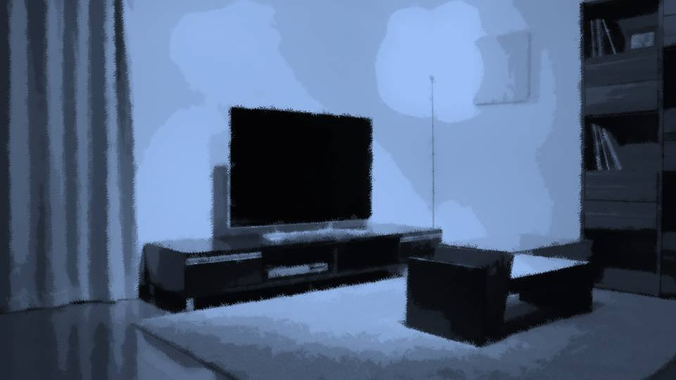
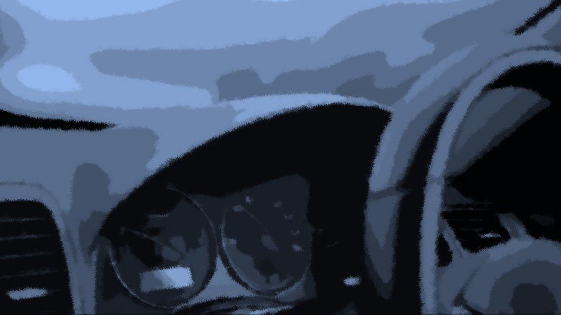
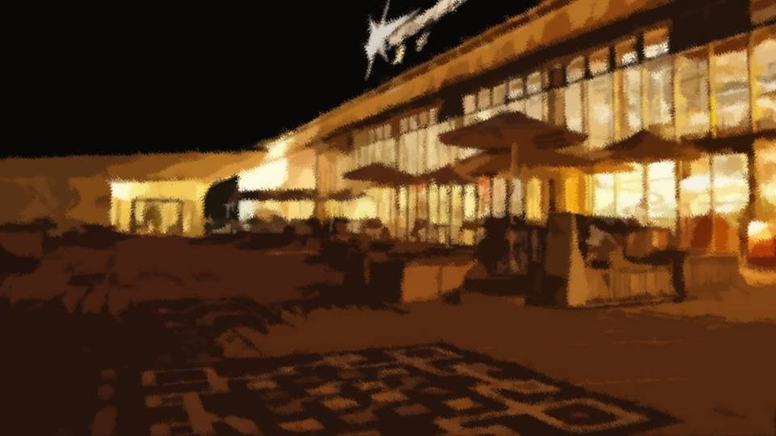
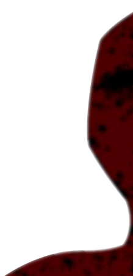

真っ赤な××

夕暮れの桜がきれいに咲き誇り、澄んだ空に映えている。
そんな中を車で走り抜けるのは心地がいい。
隣がこの人でなければ、そう思っていただろう。
そんな中を車で走り抜けるのは心地がいい。
隣がこの人でなければ、そう思っていただろう。
「で、どういうつもりかしら？ デートのお誘い？」
「…………」
助手席には、ひたすら無言の良治さん。
私は大事な話があると、呼び出されたのだ。
私の車で私の行きたい場所へ行くよう提案すると、すんなり聞いてくれた。
「…………」
助手席には、ひたすら無言の良治さん。
私は大事な話があると、呼び出されたのだ。
私の車で私の行きたい場所へ行くよう提案すると、すんなり聞いてくれた。
着いた場所は、元木山のあの広場。
少し窓を開けると、ヒヤッとした空気が入り込んでくる。
この場所で栄一郎さんと焼き芋を食べたっけ。
しかし、あの露店は、もうなくなっていた。
少し窓を開けると、ヒヤッとした空気が入り込んでくる。
この場所で栄一郎さんと焼き芋を食べたっけ。
しかし、あの露店は、もうなくなっていた。
「さて、話を聞きましょうか？」
「ああ……そうだな……」
黙りっぱなしだった良治さんが口を開く。
「ああ……そうだな……」
黙りっぱなしだった良治さんが口を開く。

「美冬さん、春花ちゃんを返してくれないか？」
「…………」
驚くことでもない。
いつかそんなことを言われる気がしていた。
それ以外あり得るとすれば、もう監視するのはやめてくれってことくらいだろうか。
「…………」
驚くことでもない。
いつかそんなことを言われる気がしていた。
それ以外あり得るとすれば、もう監視するのはやめてくれってことくらいだろうか。
しかしそれは春花となつみちゃんを離れ離れにすることになる。
監視をやめるということは、また離れた場所で過ごす―― つまり、荒田集落へ根を下ろさないといけない。
春花となつみちゃんは大反対するだろうし、まあ、それもないか。
監視をやめるということは、また離れた場所で過ごす―― つまり、荒田集落へ根を下ろさないといけない。
春花となつみちゃんは大反対するだろうし、まあ、それもないか。
「ずいぶんストレートに言うのね。
きっと、茜と相当話し合ってきた結果なんでしょうね」
「…………」
「え？ お話は終わりかしら？ だとしたら却下よ。いくら養子だからって、誰よりもかわいい春花を手放すわけないでしょ？ それに、春花に何て説明するのかしら？」
「…………」
「え？ お話は終わりかしら？ だとしたら却下よ。いくら養子だからって、誰よりもかわいい春花を手放すわけないでしょ？ それに、春花に何て説明するのかしら？」
バカバカしい。
そう言われるのを知っていて言うのだから、滑稽としか思わない。
怒りも悲しみも湧かない。ただただ、滑稽だ。
そう言われるのを知っていて言うのだから、滑稽としか思わない。
怒りも悲しみも湧かない。ただただ、滑稽だ。
「春花ちゃんに全部説明するつもりはない。
戸籍謄本を春花ちゃんとなつみに見せればいい」
本当に滑稽だ。春花がそれだけで私から離れるとでも？
春花だってもうすぐ18歳だ。
その程度で私と親子の縁を切るなんて思えない。
本当に滑稽だ。春花がそれだけで私から離れるとでも？
春花だってもうすぐ18歳だ。
その程度で私と親子の縁を切るなんて思えない。
「あっはははは！ ほんとにおかしい！
春花と離れるくらいなら死んだ方がマシよ！ あはははは！」
高笑いする私を、良治さんはじっと見ている。
まだ言うことでもあるのだろうか。
高笑いする私を、良治さんはじっと見ている。
まだ言うことでもあるのだろうか。
「じゃあ、スマホに盗聴器が仕込まれていることを言ってもいいか？」
それが春花に知れたら、私への信頼はさすがに失墜するかもしれない。
「あっはは、次々とカードを切ってくるのね。 なるほど、盗聴器ねえ。 じゃあ盗聴器が仕込まれている理由を言うのかしら？ あんたたちがこれまで6人も殺して、それは春花自身のためだって。 重いわねえ春花には。あっははは！」
「最悪そうする。あの2人を、そろそろ俺たちの呪縛から解放してやる」
それが春花に知れたら、私への信頼はさすがに失墜するかもしれない。
「あっはは、次々とカードを切ってくるのね。 なるほど、盗聴器ねえ。 じゃあ盗聴器が仕込まれている理由を言うのかしら？ あんたたちがこれまで6人も殺して、それは春花自身のためだって。 重いわねえ春花には。あっははは！」
「最悪そうする。あの2人を、そろそろ俺たちの呪縛から解放してやる」
「はは……」
「…………」
「………… 本気で言っているの？」
「ああ、もし美冬さんが賛成してくれないなら、女ケ沢市事件の実態を洗いざらい話すつもりだ。 そうなれば美冬さんどころか、荒田集落にだって捜査の手が伸びるだろう」
「…………」
「………… 本気で言っているの？」
「ああ、もし美冬さんが賛成してくれないなら、女ケ沢市事件の実態を洗いざらい話すつもりだ。 そうなれば美冬さんどころか、荒田集落にだって捜査の手が伸びるだろう」
「そんなことしたら……
春花だってなつみちゃんだって、この社会で生きていけないわ。
あの女ケ沢市事件の犯人の娘って烙印が捺されるのよ？」
「だから交渉しに来たんだ。俺だってできれば自首したくない。 春花ちゃんさえ返してもらえればいい」
「だから交渉しに来たんだ。俺だってできれば自首したくない。 春花ちゃんさえ返してもらえればいい」
はったりでもなさそうだ。
それが世に知れれば、私たち3人は連続猟奇殺人者として逮捕されるだろう。
そしたら春花はどうなってしまうだろうか。
社会から好奇の目で見られ、まともな人生を歩めないかもしれない。
それが世に知れれば、私たち3人は連続猟奇殺人者として逮捕されるだろう。
そしたら春花はどうなってしまうだろうか。
社会から好奇の目で見られ、まともな人生を歩めないかもしれない。
「どうだ？ 春花ちゃんを返してもらえないか？」
春花は絶対に渡さない……！
そんなことをするくらいなら……！
「面白い話だったわ。さ、帰りましょう。 それとも、この後本当に、茜に内緒でデートでもする？」
春花は絶対に渡さない……！
そんなことをするくらいなら……！
「面白い話だったわ。さ、帰りましょう。 それとも、この後本当に、茜に内緒でデートでもする？」
――平静を装い、車を走らせる。
閉め忘れた窓の隙間から、冷たい空気が入り込んでくる。
閉め忘れた窓の隙間から、冷たい空気が入り込んでくる。
車を走らせたとたん、また良治さんは口を噤む。
このまま放っておけば私たちは逮捕される。
良治さんはその覚悟ができているようだ。
このまま放っておけば私たちは逮捕される。
良治さんはその覚悟ができているようだ。
いや、そんなことになったら、なつみちゃんにも殺人犯の娘と言う烙印がついて回るのだ。
やっぱりはったりだ……！
そんなことできるはずがない……！
心の中で、安堵のため息をついた。
やっぱりはったりだ……！
そんなことできるはずがない……！
心の中で、安堵のため息をついた。
が、
いや……待て……。
いや……待て……。
良治さんも、今日この話だけで交渉が成立するなんて思っていないだろう。
これからもこの交渉は続くはず。
つまり、次はどのようなカードを切ってくるのか分からない。
初日ですら盗聴器のことや女ケ沢市事件のカードを切ってきたのだ。
私をより説得できる材料を持ち出してくるかもしれない。
これからもこの交渉は続くはず。
つまり、次はどのようなカードを切ってくるのか分からない。
初日ですら盗聴器のことや女ケ沢市事件のカードを切ってきたのだ。
私をより説得できる材料を持ち出してくるかもしれない。
いったいどんなカードを切ってくる？
春花を誘拐まがいの方法で拉致する？
いや、私を殺すってこともあり得る。
春花を手放すなんて、絶対にできない……！
春花を誘拐まがいの方法で拉致する？
いや、私を殺すってこともあり得る。
春花を手放すなんて、絶対にできない……！
そうだ、良治さんたちは監視されていると思っているようだが、それは私も同じ。
互いに秘密を共有し合い、それを脅迫のネタにできるのだ。
だからもはや互いの存在が邪魔であり、脅威であり――。
最もいい方法、これを断ち切るには、どちらかが消えることだ。
私の立場では、古郡家が消えるのがベストだ。
互いに秘密を共有し合い、それを脅迫のネタにできるのだ。
だからもはや互いの存在が邪魔であり、脅威であり――。
最もいい方法、これを断ち切るには、どちらかが消えることだ。
私の立場では、古郡家が消えるのがベストだ。
明日は四月八日――栄一郎さんの十三回忌。
もし4度目の女ケ沢市事件が起こるとすれば、明日しかない。
場所は元木町になるが、日付と事件のインパクトさえ印象付けられたら、関連づいた犯行と思わせることができる。
もし4度目の女ケ沢市事件が起こるとすれば、明日しかない。
場所は元木町になるが、日付と事件のインパクトさえ印象付けられたら、関連づいた犯行と思わせることができる。
しかし、それで私たちの犯行が明るみに出る可能性もある。
であれば、春花を荒田集落へ無理矢理でも連れて行くか……。
あそこなら、私たちをかくまってくれるはずだ。
春花も16歳を過ぎたから、荒田集落で居住が許される。
それがダメなら、本当に春花とともに心中するか……。
であれば、春花を荒田集落へ無理矢理でも連れて行くか……。
あそこなら、私たちをかくまってくれるはずだ。
春花も16歳を過ぎたから、荒田集落で居住が許される。
それがダメなら、本当に春花とともに心中するか……。
やるとしても時間がないので、綿密な計画を立てることができない。
まずはこの男を消す。
過去の手口に倣うなら、できるだけ無残な状態にしなくてはならない。
なおかつ、放っておいても死ぬような方法。
できれば今からでも用意できる凶器――ナイフ1本でできるような方法……。
まずはこの男を消す。
過去の手口に倣うなら、できるだけ無残な状態にしなくてはならない。
なおかつ、放っておいても死ぬような方法。
できれば今からでも用意できる凶器――ナイフ1本でできるような方法……。
――しばし、荒田集落での生活を思い出す。
山でのサバイバル生活や動物の殺し方、解体方法――。
よし、最もいいのは皮剥ぎ死体にしてやることだ。
生き物の皮を剥ぐのは荒田集落で経験があるし、人間でも要領は同じはず。
手間はかかるが、明日の朝発見できる状態にするにはまだ間に合う。
山でのサバイバル生活や動物の殺し方、解体方法――。
よし、最もいいのは皮剥ぎ死体にしてやることだ。
生き物の皮を剥ぐのは荒田集落で経験があるし、人間でも要領は同じはず。
手間はかかるが、明日の朝発見できる状態にするにはまだ間に合う。
あとは場所だ。
この軽自動車では狭すぎるし、外では誰に見つかるか分からない。
人に見つからず、自分だけのスペースと言えば……。
この軽自動車では狭すぎるし、外では誰に見つかるか分からない。
人に見つからず、自分だけのスペースと言えば……。
この時期、中央公園近くの路肩には、屋台準備のミニバンがたくさん路駐している。
1台くらい失敬できるなら、その中でやった方がいい。
どうせ荒田に行くか、死ぬかなんだ。1台盗んだって大した問題じゃない。
さて、この男を殺し、死体が発見されたらどうなるか。
1台くらい失敬できるなら、その中でやった方がいい。
どうせ荒田に行くか、死ぬかなんだ。1台盗んだって大した問題じゃない。
さて、この男を殺し、死体が発見されたらどうなるか。
明日は事件が発覚して学校は休校になるだろう。
これまでの事件の時も、同じように付近の学校は休校になったのだ。
春花はおそらくなつみちゃんと過ごすと思われる。
これまでの事件の時も、同じように付近の学校は休校になったのだ。
春花はおそらくなつみちゃんと過ごすと思われる。
春花の机に例の紙人形を置いておけば、不安がって余計になつみちゃんと一緒に居ようとするはずだ。
毎年のように、春花を食あたりさせておいてよかった。
明日だけごまかせればいいから、本当の吐瀉物である必要はない。
毎年のように、春花を食あたりさせておいてよかった。
明日だけごまかせればいいから、本当の吐瀉物である必要はない。
盗聴器があれば2人の動きは把握できる。
途中でなつみちゃんと茜は警察に呼ばれるかもしれないが、夜通しと言うことはないだろう。
茜は過去の事件について自白することもないはずだ。
警察署の近くか自宅で帰りを待ち伏せればいいだけ。
途中でなつみちゃんと茜は警察に呼ばれるかもしれないが、夜通しと言うことはないだろう。
茜は過去の事件について自白することもないはずだ。
警察署の近くか自宅で帰りを待ち伏せればいいだけ。
環境はうまいこと整っている。
あとはなつみちゃんを殺す時、春花に目撃されてもいいように、死神の格好と手口を真似る。
昼のうちに死神の格好と凶器を真似られるものを準備して……。
明日は法要には行けないが、もうそれどころではない。
あとはなつみちゃんを殺す時、春花に目撃されてもいいように、死神の格好と手口を真似る。
昼のうちに死神の格好と凶器を真似られるものを準備して……。
明日は法要には行けないが、もうそれどころではない。
あの薬はまだ予備分があったはず。
よし！ 完璧だ……！
ターゲットは古郡良治、古郡茜、そして古郡なつみ。
なつみちゃんの直感は脅威だ。あの魔女も消した方がいい。
もし邪魔者が現れたら殺してしまえばいい。
あの薬があれば、大男だろうが問題ない。
ターゲットは古郡良治、古郡茜、そして古郡なつみ。
なつみちゃんの直感は脅威だ。あの魔女も消した方がいい。
もし邪魔者が現れたら殺してしまえばいい。
あの薬があれば、大男だろうが問題ない。
「ふう……」
ちょうど赤信号だ。
「良治さん、ダッシュボードにウェットティッシュがあるんだけど、取ってくれる？」
「…………」
良治さんは無言でダッシュボードを開け、中を覗きこむ。
ちょうど赤信号だ。
「良治さん、ダッシュボードにウェットティッシュがあるんだけど、取ってくれる？」
「…………」
良治さんは無言でダッシュボードを開け、中を覗きこむ。
良治さんの喉元を人差し指と中指の第二関節部分で突いた。
良治さんは小さな悲鳴を上げ、うなだれたまま動かなくなった。
すんなりと失神してくれたようだ。
もともと鹿を気絶させる方法だが、それに比べて人間は何とも脆い生き物だ。
しばらく目を覚まさないだろう。
良治さんは小さな悲鳴を上げ、うなだれたまま動かなくなった。
すんなりと失神してくれたようだ。
もともと鹿を気絶させる方法だが、それに比べて人間は何とも脆い生き物だ。
しばらく目を覚まさないだろう。

――途中のホームセンターで包丁を3本と砥石、雑巾、食紅を購入した。
ここで足がついたって構わない。
明後日の朝には、元木町の陽を見ることはないのだ。
地下駐車場は人目に付きやすいが、元木町に監視カメラがついている施設は微々たるものだ。
ここで足がついたって構わない。
明後日の朝には、元木町の陽を見ることはないのだ。
地下駐車場は人目に付きやすいが、元木町に監視カメラがついている施設は微々たるものだ。
が、さすがに今どき、ここには監視カメラはついているようだ。
まあ、明日の夜までに逃げられればいいのだ。気にする必要もない。
まあ、明日の夜までに逃げられればいいのだ。気にする必要もない。
ホームセンターから中央公園には歩いて行ける。
車をホームセンターに置き、中央公園に向かった。
車をホームセンターに置き、中央公園に向かった。

――中央公園はたくさんの人で賑わっており、予想通りたくさんのミニバンが駐車されていた。
1台くらい鍵がかかっていないものはないだろうか。
できるだけ大きくて、スモークガラスで、積み荷が少ないもの……。
いくつか条件に合うミニバンが停まっている。
1台くらい鍵がかかっていないものはないだろうか。
できるだけ大きくて、スモークガラスで、積み荷が少ないもの……。
いくつか条件に合うミニバンが停まっている。
条件に合うミニバンに手をかけると、何の抵抗もなくドアが開いた。
そしてキーは刺さったまま。
とても運がいい！ いや、この平和ボケした元木町ならではだろう。
そしてキーは刺さったまま。
とても運がいい！ いや、この平和ボケした元木町ならではだろう。
後ろも大体荷物は運びだされていて、空間は充分だ。
私は人目も気にせずミニバンを走らせた。
ガソリンの残量も問題ない。
ガソリンの残量も問題ない。
ホームセンターに戻り、良治さんをミニバンに移動させた。
自分の車の隣にミニバンを駐車すれば、女手であっても人間1人の移動なんて何とかなるものだ。
人目にもついていないはず。
自分の車の隣にミニバンを駐車すれば、女手であっても人間1人の移動なんて何とかなるものだ。
人目にもついていないはず。

そして速やかに、自宅に自分の車を戻す。
時計を見たら20時だった。
あとは徒歩でホームセンターに戻り、ミニバンを人目のつかない適当な場所に…… いや、すでに盗難車の被害届が出ているかもしれない。
いったん県外まで出た方がいいか。
時計を見たら20時だった。
あとは徒歩でホームセンターに戻り、ミニバンを人目のつかない適当な場所に…… いや、すでに盗難車の被害届が出ているかもしれない。
いったん県外まで出た方がいいか。
――しかし、これは賭けだ。
もし検問が張られていたらアウトだ。
捕まれば、本来の目的を達成することができない。
古郡家を殺すのは手段であって、目的ではないのだ。
もし検問が張られていたらアウトだ。
捕まれば、本来の目的を達成することができない。
古郡家を殺すのは手段であって、目的ではないのだ。
念のためだ。自宅に上がり、あの薬を用意しよう。
もし警察に囲まれるようなことがあれば、みんな殺せばいい！
その場合は春花をすぐに荒田へ連れて行かなくてはならないが……。
春花を失うくらいなら、警察を敵に回したって怖くない。
もし警察に囲まれるようなことがあれば、みんな殺せばいい！
その場合は春花をすぐに荒田へ連れて行かなくてはならないが……。
春花を失うくらいなら、警察を敵に回したって怖くない。


家に入ると中は暗いままだった。
春花はリビングのソファで眠っている。
春花はリビングのソファで眠っている。
「春花……」
いつもなら起こして自室に寝かせるのだが、今日は毛布を掛けるだけにとどめる。
春花には今、寝てもらっていた方がいい。
いつもなら起こして自室に寝かせるのだが、今日は毛布を掛けるだけにとどめる。
春花には今、寝てもらっていた方がいい。
そっと自室に入り、物音を立てないよう押入れをあさった。
「あった……！」
奥からややラベルの黒ずんだ注射器が何本か出てきた。
これがあれば、何とかなる。
念のため全部は持って行かず、1本だけ置いていく。
このような貴重品は分散させて保管した方がいい。
「あった……！」
奥からややラベルの黒ずんだ注射器が何本か出てきた。
これがあれば、何とかなる。
念のため全部は持って行かず、1本だけ置いていく。
このような貴重品は分散させて保管した方がいい。
服が血まみれになるだろうから、着替えも用意した。
ここからホームセンターまで走って10分くらいだろうか。
これからの体力も考えて早歩きの方がいいだろう。
これからの体力も考えて早歩きの方がいいだろう。
――20分でホームセンターに戻った。
ミニバンは何事もなかったかのように駐車場の一角にたたずんでいる。
ミニバンは何事もなかったかのように駐車場の一角にたたずんでいる。
良治さんはまだ気を失っているようだ。
逃げられないように、アキレス腱を切ってしまうか。
今なら、後戻りできるだろう。
アキレス腱を切れば、すべてを実行するしかないのだ。
逃げられないように、アキレス腱を切ってしまうか。
今なら、後戻りできるだろう。
アキレス腱を切れば、すべてを実行するしかないのだ。
いや、既に後戻りなど無理なのだ。
もし戻れば、春花は私のそばから離れてしまうのだ。
もし戻れば、春花は私のそばから離れてしまうのだ。
私は買ったばかりの包丁を手に取り、ミニバンのドアを閉めた。
包丁を良治さんのアキレス腱に突き立て、一気に体重をかける
包丁を良治さんのアキレス腱に突き立て、一気に体重をかける

アキレス腱が断裂する時、良治さんは目を覚ましたかと思うほどに飛び上がった。
しかし、それ以上の反応は示さなかった。
脊髄反射と言うやつだろうか。
足はもう1本ある。
さあ、やれよ。やれよ、美冬……。
しかし、それ以上の反応は示さなかった。
脊髄反射と言うやつだろうか。
足はもう1本ある。
さあ、やれよ。やれよ、美冬……。
アキレス腱を切られても気を失ったままだ。
これで私も後戻りできない。
これで私も後戻りできない。

スピード違反などで捕まらないよう心掛け、スマートフォンで随時検問情報をチェックする。
今のところ、特に問題はなさそうだ。1時間もあれば県外に着く。
今のところ、特に問題はなさそうだ。1時間もあれば県外に着く。
「う……ぐあ……！」
「ようやく気がついた？」
「どこだここは……！ 足が……うぐ……！」
「動けないでしょ？ 今年の死神の餌食は、古郡家に決まったのよ」
「な……！」
「ようやく気がついた？」
「どこだここは……！ 足が……うぐ……！」
「動けないでしょ？ 今年の死神の餌食は、古郡家に決まったのよ」
「な……！」
後ろからバタバタと暴れる音がする。
しかし、腱を切られていて移動できないようだ。
両手も縛ってある。
しかし、腱を切られていて移動できないようだ。
両手も縛ってある。
「まあ、今さら命乞いしても遅いけどね」
「…………」
「どうしたの？ 黙っちゃって。やっぱりショックかしら？」
「あ……茜には…… こういうこともあるかもしれないと、伝えてある……」
「そ」
それくらい予想済みだ。
でもなつみちゃんのことを考えれば、警察に届けることもできないだろう。
「…………」
「どうしたの？ 黙っちゃって。やっぱりショックかしら？」
「あ……茜には…… こういうこともあるかもしれないと、伝えてある……」
「そ」
それくらい予想済みだ。
でもなつみちゃんのことを考えれば、警察に届けることもできないだろう。
「あっははははは！
さあさあ！ 古郡良治最後の夜の始まりよ！」
「く……いたた……！ くそ……！」
「アキレス腱をホームセンターの安物包丁で切ったんだもの。 ごめんなさいね、上手に切れなくて」
「だまれ……！ この魔女め……！」
「く……いたた……！ くそ……！」
「アキレス腱をホームセンターの安物包丁で切ったんだもの。 ごめんなさいね、上手に切れなくて」
「だまれ……！ この魔女め……！」
「あっははははは！ ちょっとでも命乞いするかと期待したけど……
すごいわね！ まあ、これまで茜と協力して6人も殺したんですもの。
常人には分からない経験もたくさん積んだんでしょうね！」
「春花ちゃんは……絶対に返してもらう……！」
「春花ちゃんは……絶対に返してもらう……！」
「くっふふふ！ 茜にそんな度胸あるのかしら？
無理よね、家族を失う辛さも知らず、人を殺さないと生きられないようなどん底に叩き落されたこともなく……。
今でこそ、私から見れば茜は温室育ちのお嬢ちゃま」
「どうして……どうして私だけがこんな目に……！
私のお父さんもお母さんも……
栄一郎さんも栄一郎さんとの実の赤ちゃんも……！
どうして私だけなのよ……！
それを今度は……
今度は春花を手放せですって……？」
「春花を渡してなるものかああ！」
「くっふふふふ……！ これが笑わずにいられると思う？
私ってば、きっと前世でとんでもない悪人だったんでしょうね」
なぜだろう、気分がハイになって愉快な気分だ。
アドレナリン、ノルアドレナリン、βエンドルフィン、ドーパミンなどのホルモンや脳内物質が、ごちゃまぜで私の身体に満ち満ちている。
なぜだろう、気分がハイになって愉快な気分だ。
アドレナリン、ノルアドレナリン、βエンドルフィン、ドーパミンなどのホルモンや脳内物質が、ごちゃまぜで私の身体に満ち満ちている。
私ってやっぱり、天性の犯罪者だったのかしら？
だって今にして思えば、女ケ沢市事件があそこまでうまく行ったのが不思議なくらいだ。
どこか一歩でも間違えたら、私は間違いなく豚箱行き…… いや、死刑台送りだった。
私には才能があるんでしょうね、犯罪の才能が。
だって今にして思えば、女ケ沢市事件があそこまでうまく行ったのが不思議なくらいだ。
どこか一歩でも間違えたら、私は間違いなく豚箱行き…… いや、死刑台送りだった。
私には才能があるんでしょうね、犯罪の才能が。
ようやく自分の境遇に納得できた。
世の中に善人と悪人がいるのは、性善説や性悪説によるのではない。
自分が持っている才能がいつ、どのように目覚めるかで変わるのだ。
犯罪の才能がまるでない者は、きっと罪を犯すことなどできない。
逆に犯罪でしか生きられない状況に放り込まれたら、それは悪人たる才能がある証拠だ。
世の中に善人と悪人がいるのは、性善説や性悪説によるのではない。
自分が持っている才能がいつ、どのように目覚めるかで変わるのだ。
犯罪の才能がまるでない者は、きっと罪を犯すことなどできない。
逆に犯罪でしか生きられない状況に放り込まれたら、それは悪人たる才能がある証拠だ。
あれ……？ ちょっと理屈的におかしいかな？
犯罪でしか生きられないから…… それが才能になる？
あはは！ やっぱり論理破綻してるわー！
っていうか、自分でも何考えてるのかわからないし。
あーあ、 楽し。
犯罪でしか生きられないから…… それが才能になる？
あはは！ やっぱり論理破綻してるわー！
っていうか、自分でも何考えてるのかわからないし。
あーあ、 楽し。

結局検問もなく、スムーズに県外に出た。
時刻は21時半。時間は充分にある。
高速道路のサービスエリアに車を停めた。
ここなら不審車扱いされることもないし、明かりも十分だ。
ガラスはスモークだから人目も大丈夫。
時刻は21時半。時間は充分にある。
高速道路のサービスエリアに車を停めた。
ここなら不審車扱いされることもないし、明かりも十分だ。
ガラスはスモークだから人目も大丈夫。
私も後部座席へ行き、良治さんの顔をまじまじと見つめる。
ああ……この人、これから死ぬんだ……。
皮を剥がされて、とどめも刺されず、苦しみながら……。
そう考えると、急に愛おしく思えてきた。
ああ……この人、これから死ぬんだ……。
皮を剥がされて、とどめも刺されず、苦しみながら……。
そう考えると、急に愛おしく思えてきた。
「ねえ良治さん……
あなた、茜しか女知らないんでしょ？
最後に、キスしてあげてもいいわよ？
これでも一応モテる私からの、最後のお情けよ。
どう？ 今なら構わないわよ？」
顔にネトッとした粘液がつく。
良治さんは私の顔面に唾を吐きかけたようだ。
いや……これは血？
唾液と血の臭いが混じっている。
痛みと悔しさで、ギリギリと口の中を噛んでいたのかしら？
良治さんは私の顔面に唾を吐きかけたようだ。
いや……これは血？
唾液と血の臭いが混じっている。
痛みと悔しさで、ギリギリと口の中を噛んでいたのかしら？
不思議と怒りがわいてこない。
最後の最後で必死になって生きている様を見るような。
荒田で動物にとどめを刺したときも、こんな感じで最後の抵抗を見せたものだ。
最後の最後で必死になって生きている様を見るような。
荒田で動物にとどめを刺したときも、こんな感じで最後の抵抗を見せたものだ。
「んふふ……最後に唾を吐きかけるなんて、まるでイタチの最後っ屁ね。
まあ、その唾を飛ばした唇だけは残しておいてあげるわ。
最後に言い残すことはあるかしら？ イタチさん」
「…………」
抵抗する様子も、怯える様子もない。
本当にすべて覚悟の上で交渉しに来たようだ。
「…………」
抵抗する様子も、怯える様子もない。
本当にすべて覚悟の上で交渉しに来たようだ。

「家族には……手を出さないでくれ」
「まあ、春花にだけはできるだけ何もしないつもりよ。 最悪、心中だけどね」
「茜となつみは……！ あの2人はどうする気だ！？」
「心配しないで、天国で一緒に楽しく過ごして。 あ、でもあなたと茜は地獄行きかしらね……！」
「まあ、春花にだけはできるだけ何もしないつもりよ。 最悪、心中だけどね」
「茜となつみは……！ あの2人はどうする気だ！？」
「心配しないで、天国で一緒に楽しく過ごして。 あ、でもあなたと茜は地獄行きかしらね……！」
「ぐ……ああ……！」
良治さんの太ももに包丁を突き立てると、甲高い悲鳴が上がる。
「うるさいわねえ……。また気絶させてあげましょうか？ あなたを苦しめることが目的じゃないしね」
私は再度良治さんの喉元を突いた。
良治さんの声は水を打ったかのように静かになった。
良治さんの太ももに包丁を突き立てると、甲高い悲鳴が上がる。
「うるさいわねえ……。また気絶させてあげましょうか？ あなたを苦しめることが目的じゃないしね」
私は再度良治さんの喉元を突いた。
良治さんの声は水を打ったかのように静かになった。
私としたことが……高揚して思わず太ももを刺してしまった。
皮を剥ぐ場合は、後頭部から背骨に沿って切っていかなくてはいけない。
皮を剥ぐ場合は、後頭部から背骨に沿って切っていかなくてはいけない。
――その後、私は黙々と作業を続けた。
大きな血管を切らないよう、慎重に皮を剥ぐ。
後頭部から刃を入れ、それを肛門側へ、背骨に沿って切り開いていく。
そこから左右に皮を切り開いていくと、翼が生えたかのような姿になる。
大きな血管を切らないよう、慎重に皮を剥ぐ。
後頭部から刃を入れ、それを肛門側へ、背骨に沿って切り開いていく。
そこから左右に皮を切り開いていくと、翼が生えたかのような姿になる。
野生生物にこんなことをするのは経験済みだが、人間はもちろん初めてだ。
しかし、自分でも驚くほどに冷静だった。
動物を解体する作業となんら変わらなかった。
野生生物より体毛が少ないから、皮膚を手でつかみづらいだけ。
しかし、自分でも驚くほどに冷静だった。
動物を解体する作業となんら変わらなかった。
野生生物より体毛が少ないから、皮膚を手でつかみづらいだけ。
この前の女ケ沢市事件では、ターゲットにとどめを刺しておらず、なおかつ、インパクトのある死体だったのだ。
それに倣うには皮を剥ぐだけでなく、死体の様相にもデザインが求められる。
それに倣うには皮を剥ぐだけでなく、死体の様相にもデザインが求められる。
丁寧に皮を剥いだ後は皮下脂肪も取り除き、筋肉がしっかり見えるように気を遣った。
殺し方に芸術性を求めるなんて、私も立派なサイコパスだな……。
殺し方に芸術性を求めるなんて、私も立派なサイコパスだな……。
――その作業は5時間ほどで終わった。
我ながら素晴らしい仕上がりだ。
失血は少なく、見た目も想定通りの真っ赤な死体。
見た目を真っ赤にするために、食紅も用意していた。
骨がむき出しになってしまった部分には、食紅溶液を塗りつける。
しかし表面の脂肪分でうまく血が乗らない。
グリグリと溶液を骨や腱に押し付ける。
失血は少なく、見た目も想定通りの真っ赤な死体。
見た目を真っ赤にするために、食紅も用意していた。
骨がむき出しになってしまった部分には、食紅溶液を塗りつける。
しかし表面の脂肪分でうまく血が乗らない。
グリグリと溶液を骨や腱に押し付ける。
「あ……がが……」
目を覚ました良治さんは大声を出す元気もなさそうだ。
苦痛とショックで、まともな精神でいられるわけがない。
目を覚ました良治さんは大声を出す元気もなさそうだ。
苦痛とショックで、まともな精神でいられるわけがない。
「さあ、元木町に帰りましょうか。それまで死んじゃダメよ」
あーあ、服が血まみれだ。
あーあ、服が血まみれだ。
元木町に向けて車を走らせた。幸いまだ検問はなさそうだ。
全く、元木町は平和ボケして車を盗まれるわ、住民は皮を剥がれるわ、のんきなものだ。
全く、元木町は平和ボケして車を盗まれるわ、住民は皮を剥がれるわ、のんきなものだ。
「私ね、あなたたちには感謝してるの。
おかげで春花はいじめから解放されたし、ちょっとデリカシーないけど、優しく素直でいい子に育ってくれた。
でも、春花になつみちゃんの手紙を送ったのはいただけないわねえ。
春花に私の表情見られないようにするの、どれだけ大変だったか」
あれ？ 文通は、所在確認のために私がやらせたんだっけ。
まあいいや、どっちでも。
まあいいや、どっちでも。
「な……
なつみ……
は……」
「へえ、そんな状態でも話せるのね。 あなたたちが殺した6人って、どんな最期だったの？」
「殺さ…… ない…… で……」
「へえ、そんな状態でも話せるのね。 あなたたちが殺した6人って、どんな最期だったの？」
「殺さ…… ない…… で……」
「最後に殺さないでって言ったのかしら？
でもあなたは1度も命乞いしなかったわよね。
今でもなつみちゃんのことを気に掛けるなんて、本当にすごい人だわ」
どうして私はこんなに冷静でいられるのだろうか。
いや、冷静なわけではない。
私の心は栄一郎さんが死んだときに壊れてしまったのだ。
どうして私はこんなに冷静でいられるのだろうか。
いや、冷静なわけではない。
私の心は栄一郎さんが死んだときに壊れてしまったのだ。
――時刻は朝4時半。
中央公園周辺には誰もいない。
中央公園周辺には誰もいない。

「さて、と。
良治さん、これでお別れ。本当に言い残すことはない？」
「ああ……がが……」
「あら残念、もう話せないのね」
これなら、生きて発見されても証言できないだろう。
「ああ……がが……」
「あら残念、もう話せないのね」
これなら、生きて発見されても証言できないだろう。
冷蔵庫から肉の塊を引きずり出すように、良治さんを車から引きずりおろした。
肉塊が地面につかないよう、背中に抱える。
べっとりと身体に肉の感触が伝わり何とも不快。
それに皮膚と皮下脂肪がないとはいえ、やはり重たい。
でも、20メートルほど耐えて歩かねば。
地面でこすれたら、せっかくの仕上がりが無駄になる。
べっとりと身体に肉の感触が伝わり何とも不快。
それに皮膚と皮下脂肪がないとはいえ、やはり重たい。
でも、20メートルほど耐えて歩かねば。
地面でこすれたら、せっかくの仕上がりが無駄になる。
「ふう、さようなら、古郡良治さん。
もしかしたら、今夜には私も後を追うかもしれないわ。
そしたら、一緒に地獄の火に焼かれましょう」
良治さんを御神木の前に置き、さっさとミニバンに戻ろうとすると――。
良治さんを御神木の前に置き、さっさとミニバンに戻ろうとすると――。
 video: 桜.wmv
video: 桜.wmv風が吹き、御神木から花びらが一斉に舞い散る。
花びらが良治さんの身体に張り付き、桜色の斑点を持つ肉塊に変貌する。
これがこの男の最期の姿か。
私と栄一郎さんを引き合わせ、春花を娘にさせてくれた男の、哀れで醜い最後の姿。
花びらが良治さんの身体に張り付き、桜色の斑点を持つ肉塊に変貌する。
これがこの男の最期の姿か。
私と栄一郎さんを引き合わせ、春花を娘にさせてくれた男の、哀れで醜い最後の姿。
かといって名残惜しいわけでもない。
良治さんを放置し、さっさとミニバンに乗り込んだ。
良治さんを放置し、さっさとミニバンに乗り込んだ。
あとはミニバンを適当なところに放置し、服を替えればいい。
刃物や剥いだ皮――証拠品は車内に残していくが、今日1日捕まらなければいいだけ。
私はいつでも死ぬ覚悟はできている。
刃物や剥いだ皮――証拠品は車内に残していくが、今日1日捕まらなければいいだけ。
私はいつでも死ぬ覚悟はできている。
さて……ここまでは順調にことが運んだ。
後はどこまで運を味方につけられるか。
犯罪の才能を自覚した私に、もはや怖いものなどなかった。
後はどこまで運を味方につけられるか。
犯罪の才能を自覚した私に、もはや怖いものなどなかった。
怖いのは、失敗して春花を手放してしまうこと。
それだけは何としてでも阻止しなくてはならない。
それだけは何としてでも阻止しなくてはならない。
数時間後には、日本全国が大騒ぎになることだろう。
さあ……私が捕まるか、私が死ぬか、私が春花と荒田へ逃げ込むか。
日本のみなさん、賭けましょう。
さあ……私が捕まるか、私が死ぬか、私が春花と荒田へ逃げ込むか。
日本のみなさん、賭けましょう。
Read ✓ Next in this arc →